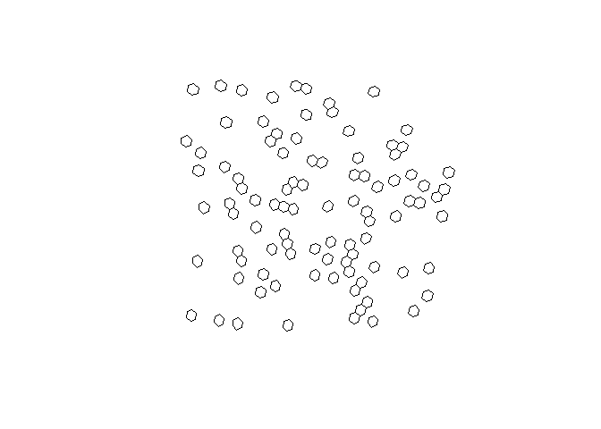
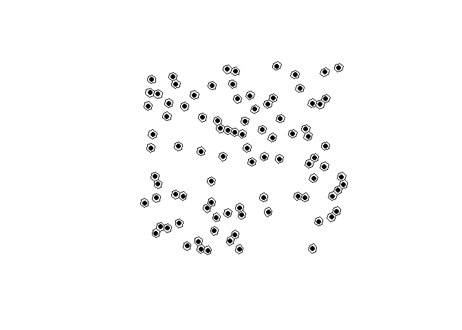

h3o is a lightweight R package for interacting with Uber’s H3 Geospatial Indexing system. The R package uses extendr to wrap the eponymous h3o Rust crate, which offers a pure Rust implementation of H3, so no linking to Uber’s H3 C library. The package is also intended to work with the {sf} package for geometric operations and as a bonus represents the H3 class as {vctrs}, so they work seamlessly within a tidyverse workflow.
Installation
You can install the release version of h3o from CRAN with:
install.packages("h3o")Or you can install the development version from GitHub with:
# install.packages("pak")
pak::pak("extendr/h3o")Example
H3 vectors can be created from POINT geometry columns (sfc objects) defined by sf.
library(h3o)
library(dplyr)
library(sf)
library(tibble)
xy <- data.frame(
x = runif(100, -5, 10),
y = runif(100, 40, 50)
)
pnts <- st_as_sf(
xy,
coords = c("x", "y"),
crs = 4326
)
pnts |> mutate(h3 = h3_from_points(geometry, 5))
#> Simple feature collection with 100 features and 1 field
#> Geometry type: POINT
#> Dimension: XY
#> Bounding box: xmin: -4.901752 ymin: 40.11472 xmax: 9.734677 ymax: 49.89308
#> Geodetic CRS: WGS 84
#> First 10 features:
#> geometry h3
#> 1 POINT (5.487647 47.2154) 851f82d3fffffff
#> 2 POINT (9.272557 47.89645) 851f8e97fffffff
#> 3 POINT (5.800661 49.6823) 851fa3dbfffffff
#> 4 POINT (-0.2583714 48.46233) 851861cffffffff
#> 5 POINT (-3.800555 49.27424) 85187567fffffff
#> 6 POINT (1.966951 45.20073) 851869a7fffffff
#> 7 POINT (4.91168 47.95131) 851f86d7fffffff
#> 8 POINT (-3.470888 48.00653) 85184457fffffff
#> 9 POINT (6.61529 45.55649) 851f9e87fffffff
#> 10 POINT (7.132062 41.02949) 85394d6bfffffffH3 vectors also have an st_as_sfc() method which allows conversion of H3 cell indexes into sf POLYGONs.
# replace geometry
h3_cells <- pnts |>
mutate(
h3 = h3_from_points(geometry, 4),
geometry = st_as_sfc(h3)
)
# plot the hexagons
plot(st_geometry(h3_cells))
H3 cell centroids can be returned using h3_to_points(). If sf is avilable, the results will be returned as an sfc (sf column) object. Otherwise it will return a list of sfg (sf geometries).
# fetch h3 column
h3s <- h3_cells[["h3"]]
# get there centers
h3_centers <- h3_to_points(h3s)
# plot the hexagons with the centers
plot(st_geometry(h3_cells))
plot(h3_centers, pch = 16, add = TRUE, col = "black")
H3Edge vectors representing the boundaries of H3 cells can be created with h3_edges(), h3_shared_edge_pairwise(), and h3_shared_edge_sparse().
cell_edges <- h3_edges(h3s[1:3])
cell_edges
#> [[1]]
#> <H3Edge[6]>
#> [1] 1141f867ffffffff 1241f867ffffffff 1341f867ffffffff 1441f867ffffffff
#> [5] 1541f867ffffffff 1641f867ffffffff
#>
#> [[2]]
#> <H3Edge[6]>
#> [1] 1141f8e9ffffffff 1241f8e9ffffffff 1341f8e9ffffffff 1441f8e9ffffffff
#> [5] 1541f8e9ffffffff 1641f8e9ffffffff
#>
#> [[3]]
#> <H3Edge[6]>
#> [1] 1141fa3dffffffff 1241fa3dffffffff 1341fa3dffffffff 1441fa3dffffffff
#> [5] 1541fa3dffffffff 1641fa3dffffffffWe’ve created a list of each cell’s edges. We can flatten them using flatten_edges().
cell_edges <- flatten_edges(cell_edges)
cell_edges
#> <H3Edge[18]>
#> [1] 1141f867ffffffff 1241f867ffffffff 1341f867ffffffff 1441f867ffffffff
#> [5] 1541f867ffffffff 1641f867ffffffff 1141f8e9ffffffff 1241f8e9ffffffff
#> [9] 1341f8e9ffffffff 1441f8e9ffffffff 1541f8e9ffffffff 1641f8e9ffffffff
#> [13] 1141fa3dffffffff 1241fa3dffffffff 1341fa3dffffffff 1441fa3dffffffff
#> [17] 1541fa3dffffffff 1641fa3dffffffffThese can be cast to sfc objects using st_as_sfc().
st_as_sfc(cell_edges)
#> Geometry set for 18 features
#> Geometry type: LINESTRING
#> Dimension: XY
#> Bounding box: xmin: 5.219 ymin: 47.20471 xmax: 9.570488 ymax: 49.98739
#> Geodetic CRS: WGS 84
#> First 5 geometries:
#> LINESTRING (5.787027 47.28957, 5.862476 47.51303)
#> LINESTRING (5.219 47.34282, 5.465773 47.20471)
#> LINESTRING (5.465773 47.20471, 5.787027 47.28957)
#> LINESTRING (5.614748 47.65143, 5.292523 47.56608)
#> LINESTRING (5.862476 47.51303, 5.614748 47.65143)Additionally, you can get the vertexes of H3 cell indexes using h3_to_vertexes() which returns an sfc_MULTIPOINT.
h3_to_vertexes(h3s)
#> Geometry set for 100 features
#> Geometry type: MULTIPOINT
#> Dimension: XY
#> Bounding box: xmin: -5.510812 ymin: 39.92916 xmax: 9.96768 ymax: 50.21936
#> Geodetic CRS: WGS 84
#> First 5 geometries:
#> MULTIPOINT ((5.292523 47.56608), (5.219 47.3428...
#> MULTIPOINT ((8.98843 47.87044), (8.901831 47.64...
#> MULTIPOINT ((5.79925 49.90325), (5.721519 49.68...
#> MULTIPOINT ((-0.1887568 48.77929), (-0.5028574 ...
#> MULTIPOINT ((-3.697215 49.31703), (-4.01933 49....Bench marks
Since h3o is written in Rust, it is very fast.
Creating polygons
h3_strs <- as.character(h3s)
bench::mark(
h3o = st_as_sfc(h3s),
h3jsr = h3jsr::cell_to_polygon(h3_strs)
)
#> # A tibble: 2 × 6
#> expression min median `itr/sec` mem_alloc `gc/sec`
#> <bch:expr> <bch:tm> <bch:tm> <dbl> <bch:byt> <dbl>
#> 1 h3o 441.5µs 476.6µs 1982. 9.85KB 14.6
#> 2 h3jsr 8.16ms 8.62ms 113. 2.67MB 93.0Converting polygons to H3 cells:
nc <- st_read(system.file("gpkg/nc.gpkg", package = "sf"), quiet = TRUE) |>
st_transform(4326) |>
st_geometry()
bench::mark(
h3o = sfc_to_cells(nc, 5, "centroid"),
h3jsr = h3jsr::polygon_to_cells(nc, 5),
check = FALSE
)
#> # A tibble: 2 × 6
#> expression min median `itr/sec` mem_alloc `gc/sec`
#> <bch:expr> <bch:tm> <bch:tm> <dbl> <bch:byt> <dbl>
#> 1 h3o 4.88ms 5.19ms 190. 22.3KB 11.2
#> 2 h3jsr 27.85ms 29.83ms 32.8 753.9KB 2.05Converting points to cells
bench::mark(
h3o = h3_from_points(pnts$geometry, 3),
h3jsr = h3jsr::point_to_cell(pnts$geometry, 3),
check = FALSE
)
#> # A tibble: 2 × 6
#> expression min median `itr/sec` mem_alloc `gc/sec`
#> <bch:expr> <bch:tm> <bch:tm> <dbl> <bch:byt> <dbl>
#> 1 h3o 103.2µs 120.4µs 7358. 848B 11.4
#> 2 h3jsr 2.69ms 3.24ms 303. 989KB 8.67Retrieve edges
bench::mark(
h3o = h3_edges(h3s),
h3jsr = h3jsr::get_udedges(h3_strs),
check = FALSE
)
#> # A tibble: 2 × 6
#> expression min median `itr/sec` mem_alloc `gc/sec`
#> <bch:expr> <bch:tm> <bch:tm> <dbl> <bch:byt> <dbl>
#> 1 h3o 358.5µs 514.2µs 1649. 848B 13.1
#> 2 h3jsr 1.6ms 2.47ms 408. 67.9KB 18.4Get origins and destinations from edges.
# get edges for a single location
eds <- h3_edges(h3s[1])[[1]]
# strings for h3jsr
eds_str <- as.character(eds)
bench::mark(
h3o = h3_edge_cells(eds),
h3jsr = h3jsr::get_udends(eds_str),
check = FALSE
)
#> # A tibble: 2 × 6
#> expression min median `itr/sec` mem_alloc `gc/sec`
#> <bch:expr> <bch:tm> <bch:tm> <dbl> <bch:byt> <dbl>
#> 1 h3o 14.6µs 20.7µs 44330. 7.86KB 13.3
#> 2 h3jsr 622.3µs 701.3µs 1311. 19.82KB 15.6